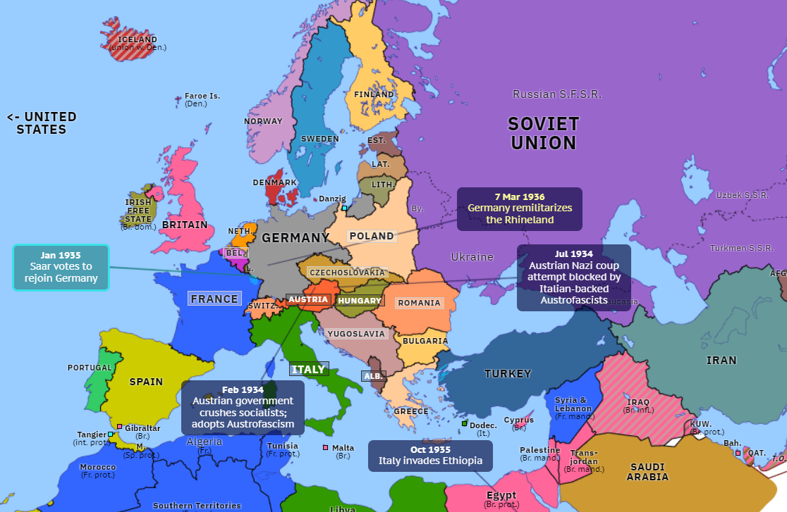
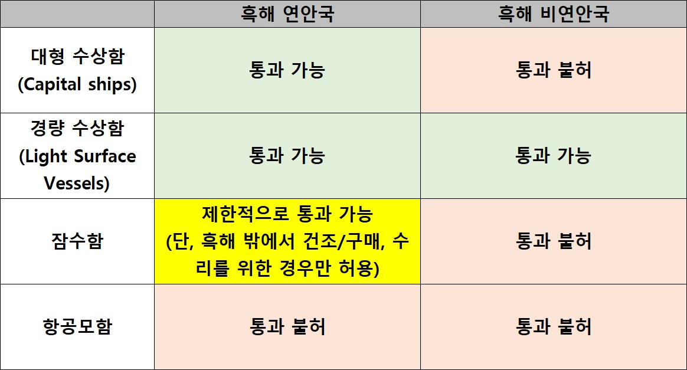
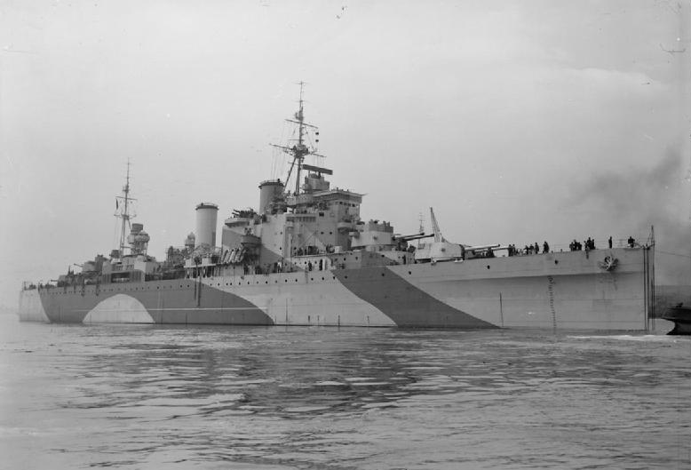
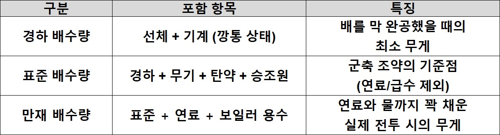
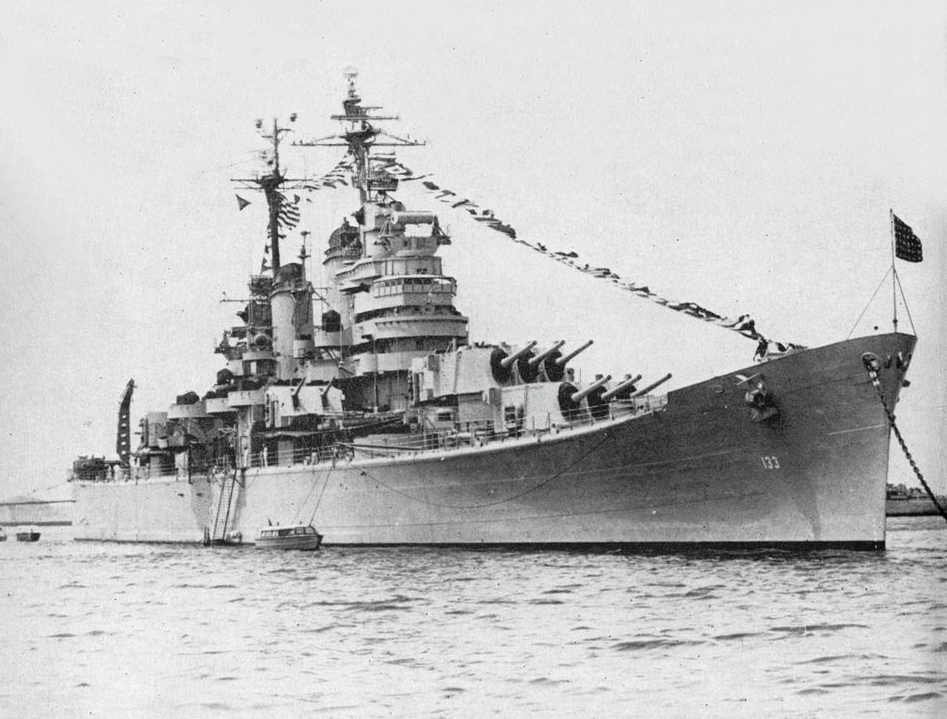
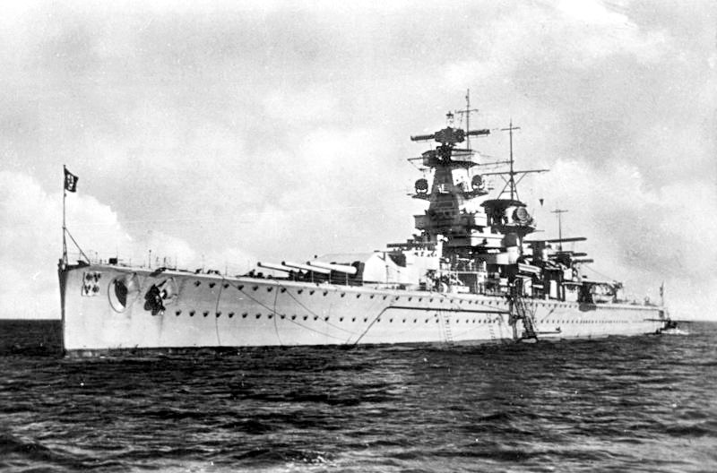
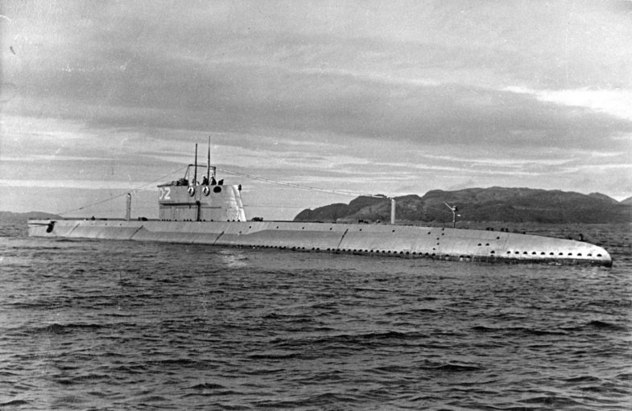
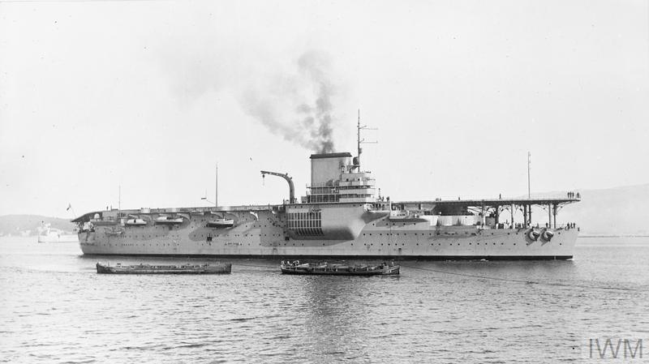

해협을 둘러싼 계산 (2) - 전함, 순양함, 그리고 항공모함
게시: 2026-04-23T06:30:23+09:00
튀르키예 공화국이 다다넬즈-보스포러스 해협 관리권을 국제 기구에 빼앗긴 것은 WW1 패전국으로서 당한 일종의 페널티. 튀르키예의 영토 중 가장 중요한 부분이 바로 그 해협인데 그 노른자를 빼앗겼다는 것은 튀르키예로서는 대대로 땅을 칠 일. 그런데 그 상황을 뒤집을 절호의 기회가 찾아왔으니 바로 파시즘과 추축국(Axis Powers)의 부상. 독일의 재무장과 함께 이탈리아도 무솔리니가 집권하면서 지중해에 중대한 위협이 되고 있었던 것. 영국과 프랑스, 러시아 등 WW1 당시의 연합군, 즉 소위 앙땅트 국가들(Entente Powers)은 전전긍긍. 모두 파시즘 국가들에 대해 경계심을 잔뜩 가지고 있었지만 영국이나 프랑스는 그 끔찍했던 전쟁을 또 겪고 싶지 않았고, 러시아는 이제 소련이 되어 영불과는 거리를 두고 있었음.

(WW1 당시의 연합국을 프랑스어 Entente(협의, 우의 등의 뜻)를 써서 흔히 앙땅트 국가들이라고 부르는데, 이는 영국과 프랑스, 러시아의 3국 연합을 뜻하는 것. 다만 이 삼국의 연합이 어느 특정 조약으로 맺어진 것은 아니고, 영-불, 불-러, 러-영의 3개 협약이 19세기말~20세기 초에 걸쳐 따로 맺어지면서 형성된 것. 이 연합은 그 전인 1882년 맺어진 독일-오스트리아-이탈리아의 3국 연합에 대항하기 위해 형성된 것. 그러나 정작 WW1이 터지자 이탈리아는 영국과 프랑스의 꼬임과 협박에 넘어가서 편을 바꾸게 됨.)
케말 파샤는 이 상황을 튀르키예의 이익을 위해 100% 활용. 튀르키예는 증대되는 전쟁의 위협 속에서 다다넬즈-보스포러스 해협을 비무장 무방비 상태로 둘 수는 없다고 이의를 제기하며 로잔 조약의 재협상을 요구. 튀르키예에게는 매우 불리하지만 다른 관련국들에게는 매우 유리했던 로잔 조약을 다시 개정하자는 것은 튀르키예 외의 관련국들에게는 손해. 그런데 왜 관련국들은 재협상에 응했을까? 먼저, 세계대전이 또 벌어질까 전전긍긍하고 있던 영국과 프랑스는 혹시라도 튀르키예가 WW1 때처럼 독일 쪽에 붙는 것만은 막아야 한다는 입장. 혹시 튀르키예의 요구를 묵살했다가 케말 파샤가 빡쳐서 옛친구 독일과 손을 잡으면 연합국에게는 악몽이 재현되는 것. 따라서 튀르키예를 달래야 할 필요가 있었음. 소련은 로잔 조약이 맺어지던 1923년 당시와는 달리 국내 상황이 안정되어 이제 제 목소리를 낼 수 있었는데, 여전히 해군력은 미약하여 영국은 커녕 이탈리아 해군이 흑해로 밀고 들어오더라도 막을 방법이 없었음. 따라서 일단 흑해를 소련의 호수로 만들 필요가 있었음.

(1936년의 유럽 지도. 현대의 유럽 국경이 대충 저때 형성된 것을 보실 수 있는데, 저때와 지금의 가장 큰 차이는 소련과 유고슬라이바의 해체. 자세히 보면 폴란드가 지금보다 훨씬 동쪽에 있었는데, 이는 WW2 승전국인 소련이 서쪽으로 팽창하면서 폴란드가 서쪽으로 밀려났고 그에 대한 보상으로 패전국 독일의 동부 영토가 폴란드 땅이 된 것.)
이탈리아는 가뜩이나 팽창하고자 몸이 달았으므로 상선은 물론 군함도 해협을 자유롭게 통행할 수 있게 해주는 로잔 조약을 굳이 개정하고 싶지 않았음. 따라서 그 조약의 개정에 반대하여 몽트뢰 협정에는 아예 참석도 하지 않고 거부했음. 다만 혼자 거부한다고 다른 관련 국가들, 가령 호주, 불가리아, 그리스, 루마니아 , 유고슬라비아 등등의 찬성을 막을 수는 없었음. 독일은 로잔 조약 당사국이 아니고 지중해나 흑해에 영토도 없었으므로 참석 자격이 없었고, WW1 당시 승전국이던 일본은 워낙 먼 곳이다보니 딱히 입장이 없었음. 몽트뢰 협정의 핵심은 튀르키예가 해협 지대를 다시 무장화하고 통제권을 가져간다는 것. 상선의 경우 예전처럼 모든 국가들이 자유롭게 항행할 수 있는 권리를 가지지만, 군함은 흑해 연안국이냐 아니냐에 따라 다름. 일단 모든 군함들은 평화시든 전시든 통과 전에 튀르키예 당국에게 미리 그 통과를 통보해야 하는데, 흑해 연안국은 8일 전에, 비연안국은 15일 전에 통보해야 했음. 또한 만약 튀르키예가 군사적 위협을 느끼는 상황이라면, 튀르키예는 그 상대국의 군함 통과를 막을 권리를 가지며, 만약 튀르키예가 전쟁 당사국이 된다면 교전 상대국의 상선까지 막을 권리를 가짐. 그리고 튀르키예가 전쟁 당사국이 아니더라도, 전쟁 중인 국가의 군함은 해협을 통과할 수 없으나, 단 기지로 되돌아가기 위해 통과하는 것은 허용됨. 그 뿐만 아니라 군함의 종류와 규모에 따라 또 차이를 둠. 이건 다소 복잡하여 표로 그리는 것이 이해가 더 쉬움. 요약하면, 흑해 연안국이 아닌 경우 흑해에는 구축함 같은 작은 수상함만 넣을 수 있으며, 항공모함은 흑해 연안국이라고 하더라도 해협 통과를 할 수 없다는 것.

이 표에서 대형함(capital ship)이라는 개념이 다소 모호할 수 있음. 전통적으로 대형함이라고 말하는 것은 전함(battleship) 또는 순양전함(battlecruiser)을 말하는 것인데, 해군 기술이 발전하면서 그런 개념이 모호해지는 경향이 당시에도 이미 있었음. 가령 WW1 때 다다넬즈 해협을 뚫어보려다 기뢰에 부딪혀 격침된 프랑스 전함 부베(Bouvet)는 1896년에 진수된 전노급 전함이다보니 12인치 주포를 장착했지만 길이는 122m에 배수량이 1만2천톤에 불과했는데, 1927년 진수된 영국 순양함 HMS London의 경우 8인치 주포를 장착했는데 길이 193m에 배수량이 만재 기준으로 1만 3천톤이 넘었음 (경하 기준으로는 9,800톤). 어떻게 보면 신형 순양함이 구형 전함보다 더 커진 것.

(영국 중순양함 HMS London. 비록 전노급 전함 부베보다 훨씬 길고 대포 문수도 훨씬 더 많았지만, 아무래도 순양함이라서 부베에 비하면 장갑이 매우 얇았고 그래서 가벼웠던 것.)

(원래 경하 배수량과 만재 배수량만 있었는데, 도중에 1922년 워싱턴 군축 조약을 하면서 새로 표준 배수량이라는 개념이 생겼음. 그래서 표준 배수량을 워싱턴 배수량이라고도 부름. 저렇게 새로 표준 배수량이라는 개념을 만든 이유는, 미국이나 영국, 일본처럼 원양에서 작전하기 위해 연료를 많이 실어야 하는 국가가, 독일이나 이탈리아처럼 비교적 근해에서의 작전이 중요하여 연료를 적게 실어도 되는 국가에 비해 불이익을 받지 않도록 하기 위한 것. 승조원들이 마시는 식수는 표준 배수량에 포함됨.)
그래서 몽트뢰 협정에서는 아예 capital ship의 정의를 표준 배수량 톤수와 장착 주포 구경 기준으로 정해버렸음. 즉, (a) 표준 배수량 기준으로 1만톤이 넘거나, 8인치를 초과하는 주포를 장착한 군함을 대형함으로 정의. 또한 당시 유행하던 포켓전함, 즉 배수량 1만톤 이하로 체급을 줄이되 무장만 잔뜩 키워서 11인치 포를 장착한 변종함을 차단하기 위해 (b) 배수량 8천톤 이하더라도 8인치를 초과하는 주포를 장착하면 대형함으로 정의.

(미해군의 Baltimore급 중순양함 USS Toledo (CA-133, 표준 1만3천톤, 33노트). 주포는 8인치 9문을 탑재. 몽트뢰 협정에 따르면 이 순양함은 무장으로는 대형함이 아니지만 배수량 때문에 대형함으로 분류됨.)
이렇게 대형함의 정의를 (a)와 (b)로 두 가지로 정의한 것이 혼란스러울 수 있음. 저럴 바에야 그냥 주포 구경이 8인치 넘으면 다 대형함으로 규정해도 되지 않나 싶은데, 그럴 경우 체급을 1만톤 이상으로 키우되 주포만 8인치로 낮추고 대신 주포 수를 잔뜩 늘리거나 어뢰, 함재기 등의 무장을 키우는 꼼수를 막기 위한 것. 또, 구축함 같은 소형 군함을 떼거리로 잔뜩 투입하는 것을 막기 위해 비연안 국가의 경우 한번에 흑해 안으로 들어올 수 있는 군함들의 총 톤수가 1만5천톤을 넘지 못하도록 했고, 또 최대 21일간만 흑해 안에 머무를 수 있도록 했음.

(정식으로는 순양함, 흔히 포켓전함으로 불렸던 Deutschland급 순양함 Admiral Graf Spee. 표준 배수량 기준으로는 1만톤을 아슬아슬하게 넘겼지만 만재 배수량은 1만5천톤에 가까왔고, 11인치 주포 6문을 장착. 포켓전함이라는 것은 영국 해군이 이 꼼수 독일 군함들을 지칭하던 용어인데, 실제로 독일 해군도 처음에는 이 순양함을 Panzerschiffe, 즉 장갑함이라고 불렀음.) 잠수함을 흑해 연안국에만 허용한 것은 튀르키예와 소련의 주장이 먹힌 것. 다만 영국이나 프랑스는 소련의 잠수함들이 지중해로 기어나와 판을 치는 것을 절대 원치 않았으므로 흑해 연안국이라고 하더라도, 잠수함의 통과는 어디까지나 지중해에서 흑해로 들어오는 것만 허용했고, 흑해에서 지중해로 나가는 것은 '수리를 위한 경우'로만 제한.

(1929년 진수된 소련 Dekabrist급 잠수함 중 2번함인 Narodovolets (D-2, 부상시 930톤, 14노트). 이 데카브리스트급 잠수함들은 총 6척이 건조되어 그 중 3척이 흑해함대에 배치됨. 그 6척 중 2척이 WW2를 거치고 살아남았는데, 이 나로도볼레츠 호가 그 2척 중 하나로서 복원 작업을 걸쳐 현재 상트 페체르부르그에 박물관함으로 전시중. 당시 소련은 흑해함대에 잠수함 40여척을 보유하고 있었으며, 이들이 지중해를 자유롭게 들락거리는 것은 소련을 제외하고는 그 누구도 원치 않았음.)
매우 흥미로운 부분이 바로 항공모함에 대한 부분. 당시 항공모함은 새롭게 떠오르는 해군 함종으로서, 당시 전세계에서 항모를 보유한 국가는 영국, 미국, 일본, 프랑스 뿐이었음. 프랑스의 경우 Béarn (2만2천톤, 22노트)이라는 실험용 항모 딱 1척뿐이라서, 사실상 항모 보유국은 영미일 3국뿐. 그런데 왜 굳이 항모를 콕 집어서 출입을 못하도록 했을까? 그 이야기는 다음주에.

(프랑스 항모 베아른(Béarn). 원래 Normandie급 전함으로 건조되다 WW1가 발발하자 건조가 중단되었고, 1920년대에 항모로 개조되어 1927년 취역. 실전에는 한 번도 투입되지 않았고, 1940년 프랑스 중앙은행이 보유하고 있던 금괴 147톤을 미국으로 실어나른 뒤 그 대가로 미국산 전투기와 폭격기를 싣고 프랑스를 향해 출항했으나, 도중에 프랑스의 항복을 접하고 카리브해의 프랑스령 마르티니크에서 어정쩡한 귀양 생활을 함.)